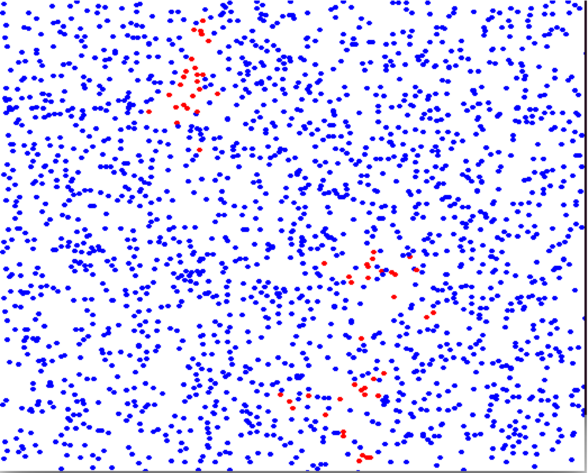
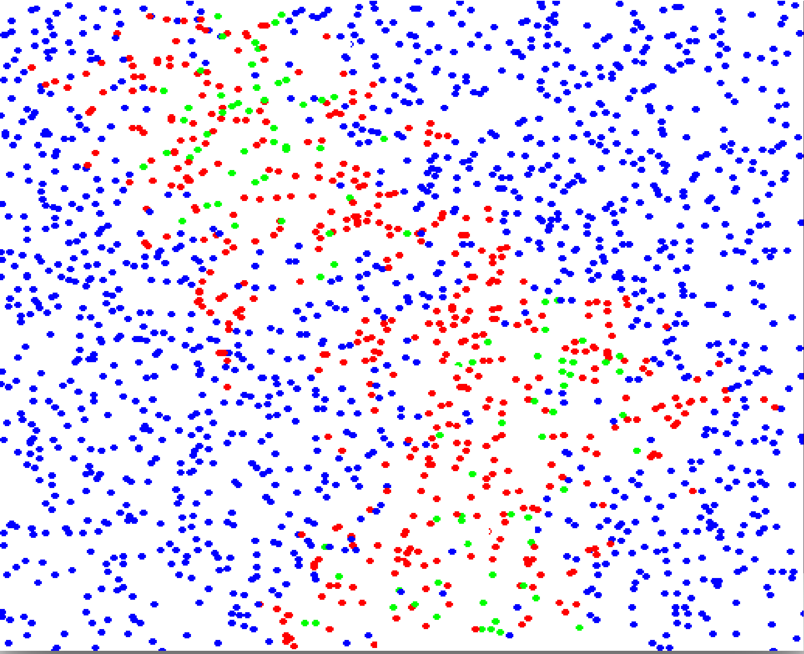
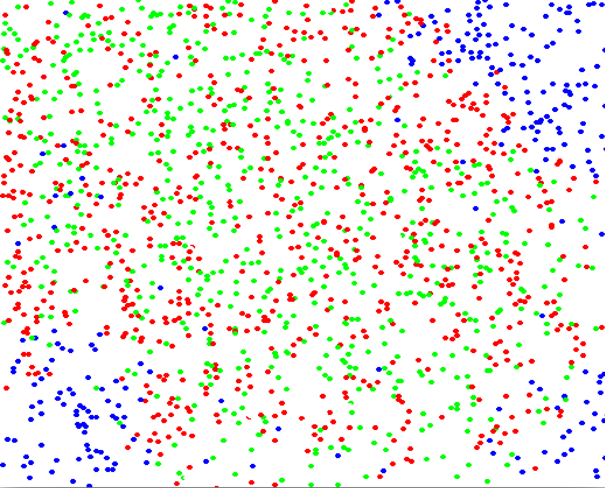

About Me
Explore a selection of projects I've undertaken throughout my academic, autonomous, and corporate journey.
I've developed these projects through self-directed learning, showcasing my competence in adaptation and
troubleshooting.
Projects
-
Ionosphere Simulation
This code demonstrates the data treatment skills for:
Data Cleaning: It efficiently reads and processes data from external files, handling missing or incomplete values through row padding.
Array Manipulation: It utilizes NumPy arrays to reshape and manipulate data, facilitating operations like indexing and slicing for multidimensional data structures.
Statistical Analysis and Calculation: It performs statistical calculations such as mean and difference calculations to derive parameters essential for further analysis.
Visualization: Through Matplotlib, it creates visually informative plots, applying color mapping and logarithmic normalization to represent density data effectively.Link to the Python script: Color_map_do_Sami2_Variando_no_t.py
-
Infectious Disease Outbreak Simulation
1
2
3
This Python script demonstrates my expertise in data analysis and modelling, particularly in infectious disease outbreak simulation. Employing Pygame
and NumPy libraries, it simulates disease spread in a 2D environment, with particles representing individuals interacting through collisions that may
transmit the disease. The main code orchestrates particle movement, interactions, and infection dynamics while calling another script named "Dynamics"
for enhanced functionality. This showcases my proficiency in composing modular and scalable solutions for complex modeling tasks, exemplifying my skills
in data analysis and modelling domains.
The Figures above tell us the following store:
1-Initial state with 3 contained particles (red dots = infected and blue dots = non-infected)
2-A second stage with the outbreak ongoing (now the green dots are the particles that recovered from the disease)
3-Now the final stage is coming where the recovered dots (in green) create a 'herd immunity' protecting the remaining blue dots.Link to the Python script: The main code: PropDoen.py
Link to Dynamics.py: